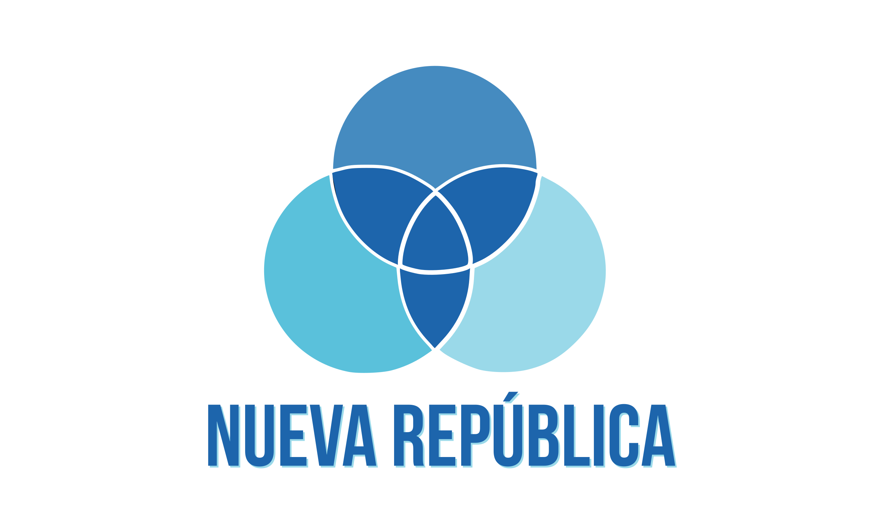

Encuesta
| Bandera | Candidato | Encuesta 1 | Encuesta 2 |
|---|---|---|---|

|
Rodrigo Chaves | 1% | 5% |

|
Figueres | 14% | 17% |
|  | Fabricio Alvarado | 13% | 20% |

|
Lineth Saborío | 5% | 16% |